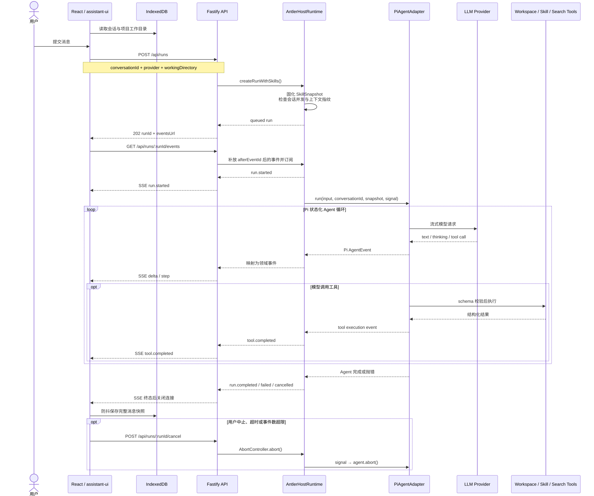

薄桌面壳
Rust 只负责启动、发现和回收 Node 伴生服务；业务编排仍留在 TypeScript 后端。
ANTLER · AS-IS ARCHITECTURE
以当前代码为准，说明 Antler 如何由 Tauri / React 客户端、Fastify 本地服务、AntlerHostRuntime、Pi Agent Core、模型供应商和受工作目录约束的工具组成一条完整 Agent 执行链路。
稳定产品边界，复用成熟 Agent loop。
Rust 只负责启动、发现和回收 Node 伴生服务；业务编排仍留在 TypeScript 后端。
前后端只通过 REST 创建/取消 run，通过 SSE 接收稳定领域事件，避免 UI 绑定供应商事件。
AntlerHostRuntime 管产品状态与限制；Pi Agent Core 管消息上下文、模型流和工具循环。
Project 绑定工作目录；文件工具校验相对路径和真实路径，Skill 在会话开始时固化快照与指纹。
实线表示当前主要调用或数据依赖。

关键边界：前端持有会话 UI 状态和用户级 Provider 配置；后端持有运行中的 Agent、事件与技能快照；模型与工具只通过 PiAgentAdapter 接入，HTTP 层不直接驱动 Provider。
相同 API 与运行时，不同进程生命周期和访问边界。
backend/index.js，固定监听 127.0.0.1:3210。server_info 交给 React；请求使用 Header 或 SSE 查询参数传递。/workspace；浏览器直接使用当前 origin。从历史恢复、创建 run、模型/工具循环到本地持久化。

当前代码实际产生的状态，不包含尚未接入的审批等待态。

conversationId 只允许一个 active run；冲突返回 HTTP 409。AbortController，用户取消和总超时都会传播到 Agent。由外到内的依赖方向。
| 层 / 模块 | 核心职责 | 关键实现 |
|---|---|---|
| React UI | 项目/会话管理、Provider 设置、消息与工具调用展示 | main.tsx、assistant-ui/thread.tsx |
| 前端运行时适配 | 创建 run、解析 SSE、映射 text/reasoning/tool-call、取消、保存消息 | use-antler-runtime.ts |
| 本地数据层 | IndexedDB 保存 projects 与 conversations；localStorage 保存 Provider 配置 | conversation-store.ts、provider-config.ts |
| Fastify 边界 | 鉴权、参数校验、REST 路由、SSE、Web 静态资源与 SPA 回退 | app.ts、routes/*、plugins/http.ts |
| Host Runtime | run 生命周期、单会话并发、超时/取消、事件缓存与 Pi 事件投影 | agent/host-runtime.ts |
| Pi Adapter | 按 Provider/工作区创建 Agent；按会话缓存上下文；注入系统提示、工具与 Skill | agent/pi-agent-adapter.ts |
| 工具层 | 工作区读写编辑、Bash、可选 Tavily 搜索、Skill 加载与资源读取 | workspace-tools.ts、tavily-search-tool.ts、skills/* |
| 外部能力 | OpenAI Responses 或 Anthropic Messages 协议；用户配置可覆盖环境配置 | config/env.ts、provider-config.ts |
领域事件屏蔽 Pi 与 Provider 的具体事件格式。
| 接口 / 事件 | 作用 | 前端映射 |
|---|---|---|
POST /api/runs | 校验会话、Provider、工作目录和 Skill Policy，异步创建 run | 取得 runId 与 eventsUrl |
GET /api/runs/:id/events | 按 Last-Event-ID / afterEventId 补放并订阅 SSE | 持续读取消息块 |
POST /api/runs/:id/cancel | 触发 run 的 AbortController | 用户停止生成时调用 |
run.started | run 进入 running | 建立运行态 |
assistant.delta | 回答文本增量 | 追加 text part |
assistant.thinking.delta | 推理文本增量 | 追加 reasoning part |
step.started / completed | 模型 turn 或工具 step 生命周期 | 工具开始时创建 tool-call part |
tool.completed | 工具结果、摘要与错误标记 | 回填对应 tool-call part |
run.completed / failed / cancelled | run 终态 | 结束流或显示错误 |
用于区分代码现状和架构规划中的目标能力。
| 能力 | 状态 | 当前事实 |
|---|---|---|
| 桌面伴生服务 + REST/SSE | 已实现 | Tauri 管理 Node 生命周期，本地令牌保护请求。 |
| 多 Provider Agent loop | 已实现 | OpenAI / Anthropic，Pi Agent 按会话保留消息上下文。 |
| 会话与项目持久化 | 部分 | 仅浏览器 IndexedDB；后端暂无 SQLite 会话/消息表。 |
| Run 事件恢复 | 部分 | 支持按事件 ID 补放，但事件只在当前 Node 进程内存中。 |
| Skill 快照与路径安全 | 已实现 | workspace 优先于 user scope；加载时校验指纹、大小与真实路径。 |
| Skill 前端启用 | 部分 | 后端支持 disabled / auto / selected；当前聊天 UI 未传 skillPolicy，因此默认关闭。 |
| 工具审批 | 待实现 | 类型中预留 awaiting_approval 和审批事件，但当前执行链没有审批门。 |
| 远端用户鉴权 | 待实现 | Docker Web 模式默认不设置访问令牌，需要外部网关或网络层保护。 |
安全提醒：read / write / edit 工具会进行工作区路径与 symlink 逃逸检查；但 bash 当前只是把工作目录设为 workspace，并非真正的文件系统沙箱，也没有逐次审批。若面向不可信输入或公网用户，应优先补齐工具策略、审批和系统级隔离。
点击可从本 HTML 相对位置打开源码。